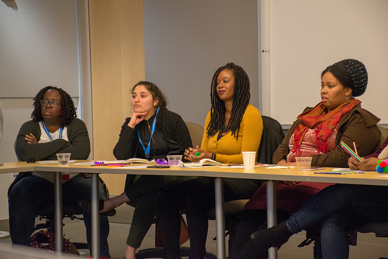
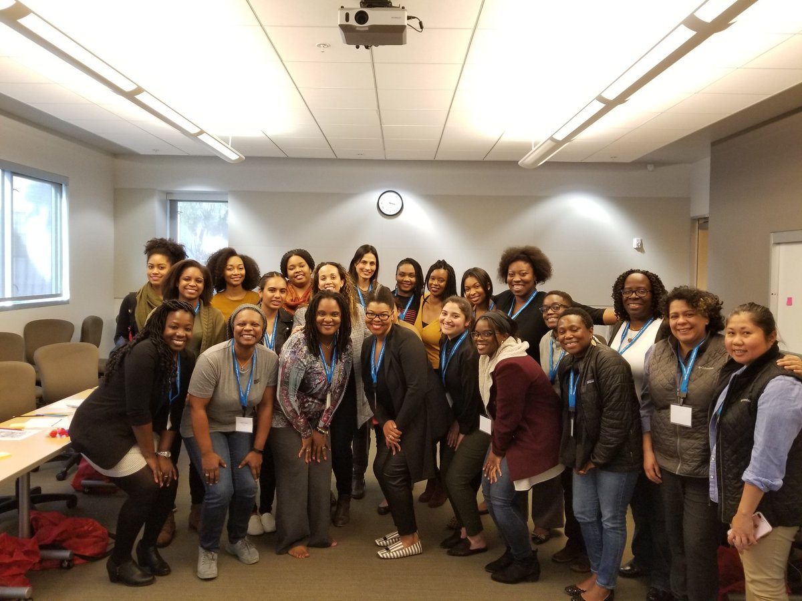
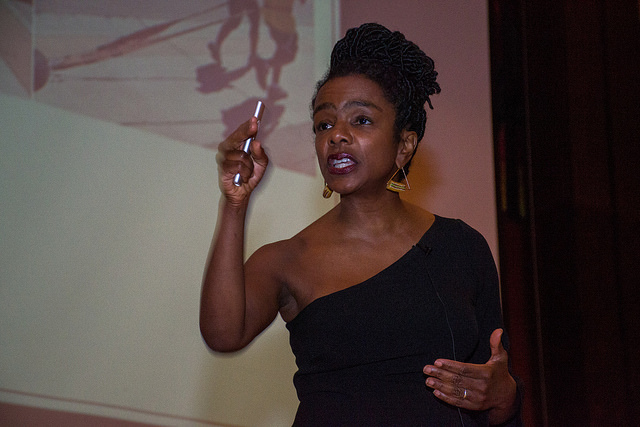
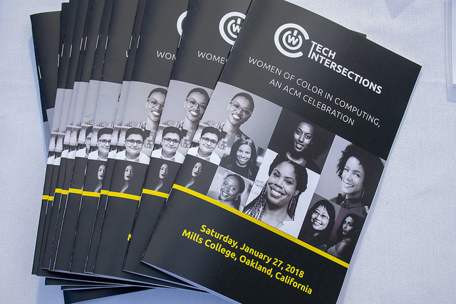
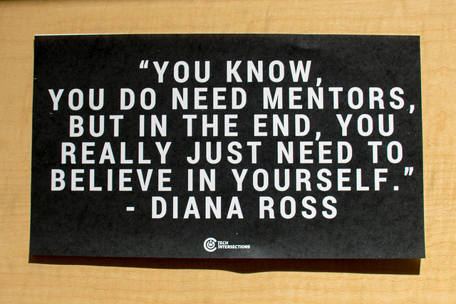

In January 2018, Tech Intersections had its inaugural conference! It was powerful to go to a conference and not feel othered, to feel like I belonged. There were so many amazing women and non-binary folks! The opening speaker, Ericka Joy, spoke about about the Lies of Silicon Valley, which was an AMAZING talk (if you don't know about her I recommend looking her up).
The Workshops I attended:- Write Your Power
- Early Career Skills
- Self Care Workshop
There were so many great talks to choose from, I was so sad I couldn't be at all of them at once! I choose to do “Write your Power” since I have been working on my website, blog post, cover letters and resumes so it felt like the best fit. And I am glad I did, I already see an improvement.
The second workshop I did was Early Career Skills. It was a panel of women that discussed topics from: handling performance reviews, to advocating for yourself for your needs (and if you have any disabilities) and the pitfalls: getting fired, getting pushed out of a job, navigating white spaces, ect.
The last workshop I did was Self Care, this was a two hour workshop, and I was happy I chose it. With all the things I am trying to get done, I know I need to take some time to take care of myself, and I need to do a better job of integrating this daily. We spent time discussing our values and wants and needs. We had a great group discussion about what issues we have been encountering and got to hear how other people were handling it.
The closing speaker was Leah McGowen-Hare, she was PHENOMENAL! She discussed her pathway in tech including the positive and negatives. She left us thinking about the four C’s: Connection, Celebration, Conviction, and Collaboration; look out for another blog post discussing how I use the 4C’s in my life.
All in all, it was beyond amazing to walk into a space and be your authentic self and feel the sense of community. I can’t wait to attend next year!
 